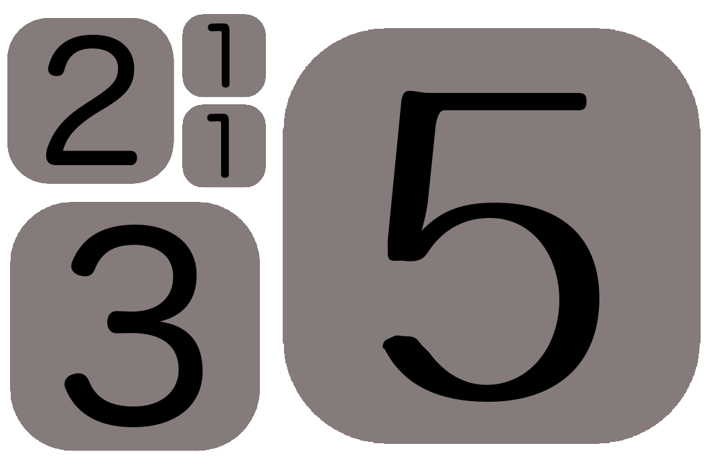

[X]
The Fibonacci Sequence
The Fibonacci Sequence is a sequence of numbers found to have significant meaning in Nature, Physics, Mathematics and almost all walks of science.
In the sequence, each number is the sum of the preceding two numbers.
The first number is 1. So the next number in the sequence is 1 + 0 = 1. (You add 0 as there is no previous number, you are technically adding nothing).
Now take the sum of the previous two numbers, 1 + 1 = 2. And again, 1 + 2 = 3. And again, 2 + 3 = 5.
So that gives us the following sequence:
If we take this sequence we can visualize the first 5 values as squares:
In the above image we can see that we can count up all the numbers to 12 by adding different squares:
1 = 1
2 = 2
1 + 2= 3
2 + 2 = 4
5 = 5
5 + 1 = 6
5 + 2 = 7
5 + 3 = 8
5 + 3 + 1 = 9
5 + 3 + 2 = 10
5 + 3 + 2 + 1 = 11
5 + 3 + 2 + 1 + 1 = 12
By using the above squares we can count all the hours from 1-12.
We can also count all of the hours from 0-55, by counting up in multiples of five:
0 * 5 == 0
1 * 5 = 5
2 * 5 = 10
...
11 * 5 = 55
We are now going to use this information to work out the time with our squares.
Any red squares value is added to the hours, any green squares value is added to the minutes, any blue square is added to both, and grey squares are ignored.
Look at the following picture:
HOURS: Our 5 square is red, our 2 square is red, and our 1 square is blue. We add all these to the hours: 5 + 2 + 1 = 8
MINUTES:We have no green squares, but our 1 square is blue: 1 * 5 = 5
So our time is 8:05
HOURS: 2
MINUTES: (2 + 5) * 5 = 7 * 5 = 35
The time is 2:35
The time is 6:50
close